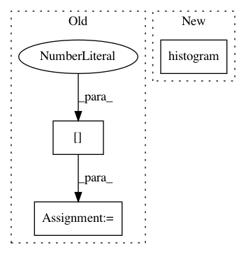

74b332aa2fb55c2026b32f19dec7d28cef4356ed,arviz/plots/backends/matplotlib/posteriorplot.py,,_plot_posterior_op,#Any#Any#Any#Any#Any#Any#Any#Any#Any#Any#Any#Any#Any#Any#Any#Any#Any#,91
Before Change
kwargs.setdefault("color", "C0")
ax.hist(values, bins=bins, alpha=0.35, **kwargs)
plot_height = ax.get_ylim()[1]
format_axes()
if hdi_prob != "hide":
display_hdi()
After Change
ax.spines["right"].set_visible(False)
ax.spines["left"].set_visible(False)
ax.spines["bottom"].set_visible(True)
ax.xaxis.set_ticks_position("bottom")
ax.tick_params(
axis="x", direction="out", width=1, length=3, color="0.5", labelsize=xt_labelsize
)
ax.spines["bottom"].set_color("0.5")
In pattern: SUPERPATTERN
Frequency: 3
Non-data size: 3
Instances
Project Name: arviz-devs/arviz
Commit Name: 74b332aa2fb55c2026b32f19dec7d28cef4356ed
Time: 2020-08-05
Author: tomicapretto@gmail.com
File Name: arviz/plots/backends/matplotlib/posteriorplot.py
Class Name:
Method Name: _plot_posterior_op
Project Name: google/ffn
Commit Name: ce83340731ff66c88ff3d09aa7b70667b7db3f74
Time: 2018-10-28
Author: mjanusz@google.com
File Name: ffn/training/model.py
Class Name: FFNModel
Method Name: set_up_optimizer
Project Name: arviz-devs/arviz
Commit Name: 73f90a2a1c6a893886909a7e8012718efc0b18e9
Time: 2020-11-06
Author: aloctavodia@gmail.com
File Name: arviz/plots/backends/matplotlib/posteriorplot.py
Class Name:
Method Name: _plot_posterior_op